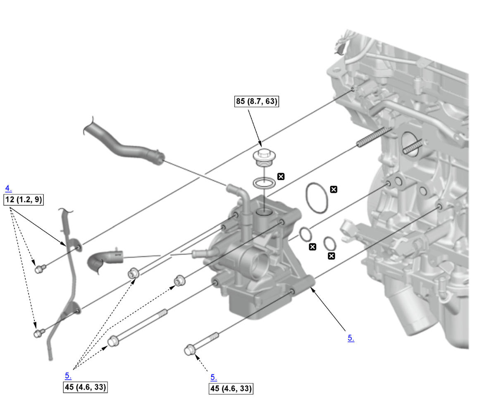

Removal and Installation: Procedure
NOTE:
Numbered call-outs in figure pertain to list numbers in following procedure.


 Courtesy of HONDA, U.S.A., INC.
Courtesy of HONDA, U.S.A., INC. |
Torque: N.m (kgf.m, lbf.ft) |
|
Replace |
- Turbocharger - Remove
- Water Pump - Remove
- Thermostat Housing and Connecting Pipe - Remove
- Turbocharger Bypass Control Valve Solenoid Pipe B - Remove
- Water Passage - Remove
- Oil Cooler - Remove
- All Removed Parts - Install
1. Install the parts in the reverse order of removal.